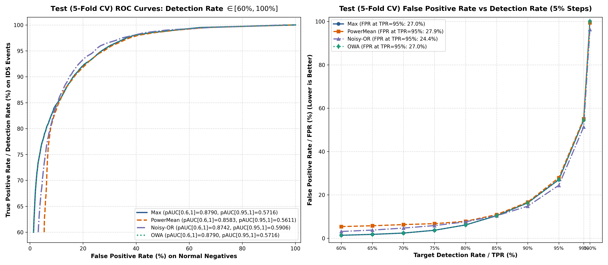
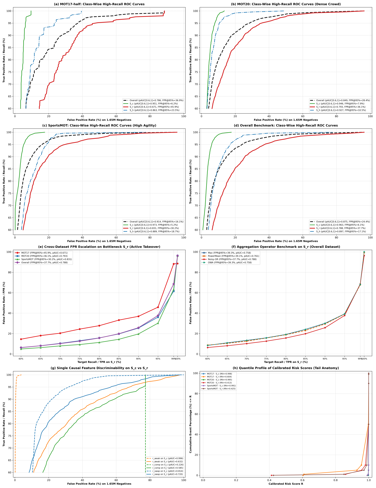

多目标跟踪（MOT）在自动驾驶与具身智能系统中承担着时空连续感知的核心职责。传统 Tracking-by-Detection 范式（如 ByteTrack）在快速交错与遮挡场景下偶发身份跳变（IDS）。构建轻量级在线因果风险感知系统，在极低误报代价下实现关键失效事件的高效预警与拦截，具有重大的学术价值与工业落地意义。
在跨序列 5-Fold 盲测下，Max / OWA 算子在 \(\mathrm{TPR} = 60\%\) 时全局误报率仅为 \(1.36\%\)，在 \(\mathrm{TPR} = 75\%\) 时仅为 \(3.67\%\)。以极低的正常帧误扰动，捕获全量超过六成至四分之三的身份跳变事件，展现出极强的工业落地可用性。
占全量近六成（\(59.7\%\)）的 \(S_c\)（冷启动）与 \(S_h\)（历史重激活）展现出极佳的因果可观测性：\(S_c\) 在 \(\mathrm{TPR} = 95\%\) 时误报率仅为 \(6.09\%\)（100% 的 \(S_c\) 事件具备显著的高风险特征响应）；\(S_h\) 在 \(\mathrm{TPR} = 90\%\) 时误报率仅为 \(12.59\%\)。
早期的特征提取依赖前置资格门控（如 \(top_1 \ge 0.2 \land top_2 \ge 0.2\)），人为过滤了新目标冷启动场景，并引入了大量 NaN 缺失值。本工作回归严格在线因果（Strictly Online Causal）哲学：特征计算严格仅依赖当前检测框与 \(F-1\) 历史轨迹外推预测，全量检测框数学封闭且零 NaN。
当前检测框与所有活跃轨迹预测框的最大 IoU 重叠缺陷。无轨迹时 \(top_1=0 \implies f_{\mathrm{weak}}=1.0\)，物理值域严格 \([0, 1]\)。
次优候选轨迹对同一检测框的争夺强度。当轨迹数 \(m < 2\)（无竞争）时缺省赋 \(0.0\)，值域严格 \([0, 1]\)。
局部 \(2 \times 2\) 匈牙利对调代价差。对调成本更低表明局域匹配脆弱。无局部候选时缺省赋安全值 \(-2.0\)。
为消除原始特征量纲差异并赋予明确的统计物理意义，我们收集了 114 个序列全量正常帧（C 组）的 1,647,180 个负样本检测框，构建单调非递减的经验分布校准函数（ECDF）：
为将三维风险 \(\mathbf{r} = (r_{\mathrm{weak}}, r_{\mathrm{comp}}, r_{\mathrm{swap}})\) 聚合成综合标量风险 \(R(\mathbf{r}) \in [0, 1]\)，我们提出了以木桶理论为核心的极端分离度最大化目标函数：
无参“一票否决”。在中低召回（TPR 60%~80%）阶段因无噪声累积表现极为优异。
广义幂均值（\(p \ge 1\)），非线性强化主导分量，实现平滑过渡。
亚可加性因果概率模型。多弱风险协同放大，在高召回攻坚区全面胜出。
有序加权平均，按分值排序降序赋权，兼顾极值关注与排序鲁棒性。
| 目标召回率 (TPR) | Max / OWA 基线 (Test FPR) | Noisy-OR 算子 (Test FPR) | Power Mean (Test FPR) | 区间最优模型与机理优势 |
|---|---|---|---|---|
| 60.0% | 1.36% | 3.12% | 5.37% | Max / OWA 绝对王者 纯单特征无损直通，无多维度噪声叠加 |
| 65.0% | 1.78% | 3.75% | 5.76% | Max / OWA 保持 \(< 2\%\) 超低误报率 |
| 70.0% | 2.38% | 4.69% | 6.29% | Max / OWA 仅 2.38% 误报即可覆盖七成全局事件 |
| 75.0% | 3.67% | 5.83% | 6.73% | 极高性价比 Max / OWA 仅 3.67% 误报捕获 3/4 事件 |
| 80.0% | 6.14% | 7.58% | 7.79% | Max / OWA 误报抑制表现持续领跑 |
| 85.0% | 10.39% | 10.38% | 10.90% | 交汇转折点 Noisy-OR 多特征协同优势开始反超 |
| 90.0% | 16.32% | 14.79% | 16.66% | Noisy-OR 胜出：多弱风险非线性放大（\(\downarrow 1.53\text{ pp}\)） |
| 95.0% | 27.03% | 24.40% | 27.90% | Noisy-OR 胜出：高召回攻坚区净降低 2.63 个百分点误报 |
| pAUC[0.6, 1.0] | 0.8790 | 0.8742 | 0.8583 | Max / OWA 与 Noisy-OR 双星闪耀，综合表现卓越 |

为精细评估模型在不同类型事件上的适用范围，我们实施了三大失效事件独立对齐 165 万负样本的 5-Fold 交叉验证精细化诊断实验：

| 目标召回率 (TPR) | 全局 Max/OWA (FPR) | 全局 Noisy-OR (FPR) | \(S_c\) 冷启动 (Noisy-OR) | \(S_h\) 历史重激活 (Noisy-OR) | \(S_r\) 活跃接管 (Noisy-OR) | 区间推荐策略与工程价值解读 |
|---|---|---|---|---|---|---|
| 60.0% | 1.36% | 3.12% | 0.82% | 4.12% | 6.32% | 首选 Max/OWA 仅需 1.36% 误报捕获六成事件 |
| 65.0% | 1.78% | 3.75% | 1.52% | 4.87% | 8.06% | 首选 Max/OWA 超低误报（1.78%） |
| 70.0% | 2.38% | 4.69% | 2.24% | 5.52% | 10.17% | 首选 Max/OWA 误报仅 2.38%，捕获七成事件 |
| 75.0% | 3.67% | 5.83% | 2.67% | 6.46% | 12.58% | 首选 Max/OWA 极高性价比（3.67% 捕获 3/4 事件） |
| 80.0% | 6.14% | 7.58% | 3.18% | 7.93% | 15.66% | 首选 Max/OWA 误报率稳固控制在 6.14% |
| 85.0% | 10.39% | 10.38% | 3.70% | 9.64% | 19.82% | 交汇转折点 两大模型均可，Noisy-OR 略优 |
| 90.0% | 16.32% | 14.79% | 4.59% | 12.59% | 25.73% | 切换 Noisy-OR 协同增益降低 1.53pp 误报 |
| 95.0% | 27.03% | 24.40% | 6.09% | 17.07% | 37.70% | 切换 Noisy-OR 高攻坚区降低 2.63pp 误报 |
| pAUC[0.6, 1.0] | 0.8790 | 0.8742 | 0.9576 | 0.8845 | 0.7850 | 中高召回综合面积表现优越 |
为理解各类别在不同召回率下的表现根源，我们调取了三大类别的风险分值分位数分布，展现出清晰的物理机理解耦：
| 事件类别 | 样本量 | 最小值 (Min) | P01 (1% 分位) | P05 (5% 分位) | P10 (10% 分位) | 中位数 (P50) | 评分 \(\ge 0.99\) 占比 (\(\mathrm{FPR}\le 1\%\)) |
|---|---|---|---|---|---|---|---|
| \(S_c\) 冷启动 | 1,828 | 0.990955 | 0.997349 | 0.999111 | 0.999529 | 1.000000 | 100.00% |
| \(S_h\) 历史重激活 | 986 | 0.744515 | 0.974321 | 0.991593 | 0.995647 | 0.999815 | 95.94% |
| \(S_r\) 活跃接管 | 1,899 | 0.412643 | 0.817290 | 0.953920 | 0.979745 | 0.999692 | 83.52% |
新目标初次出现时前序无轨迹历史，\(f_{\mathrm{weak}} = 1 - \mathrm{top}_1\) 天然极高（P50 打满 1.0）。100% 的事件评分 \(\ge 0.9910\)，可在极低误报下实现全量捕获。
目标遮挡重现后主要呈现欠匹配特征，伴随局部微扰。95.9% 的事件评分 \(\ge 0.99\)，在 \(\mathrm{TPR} \le 90\%\) 区间内保持平稳的误报控制。
双活跃目标近距离交错，由竞争歧义 \(r_{\mathrm{comp}}\) 与交换代价差 \(r_{\mathrm{swap}}\) 协同主导。在 60%~75% 召回区间内表现扎实，是后续重点精细化调优的对象。
基于本次 165 万负样本基准、四大聚合模型对比与三大事件精细化诊断，我们制定了精准实用的分级工程部署策略：
推荐算子：Max 基线 或 OWA
工作指标：\(\mathrm{TPR} \approx 60\% \sim 80\%\)，\(\mathrm{FPR} \approx 1.36\% \sim 6.14\%\)
应用场景：适合在线实时对关联结果进行强力拦截与纠错，以极低误报代价（仅 1%~3%）阻断大批失效。
推荐算子：Noisy-OR 独立因果概率模型
工作指标：\(\mathrm{TPR} \approx 85\% \sim 95\%\)，\(\mathrm{FPR} \approx 10.38\% \sim 24.40\%\)
应用场景：激活多特征协同放大效应，用于复杂近距离交错场景下的柔性风控加权与系统预警。
推荐算子：Max / Noisy-OR 专用门控
工作指标：\(S_c\) \(\mathrm{TPR} \ge 95\%\) 时 \(\mathrm{FPR} \le 6.09\%\)
应用场景：在新轨迹初始化及长周期轨迹恢复时启用专用风控，实现近乎零漏检的新生轨迹保护。